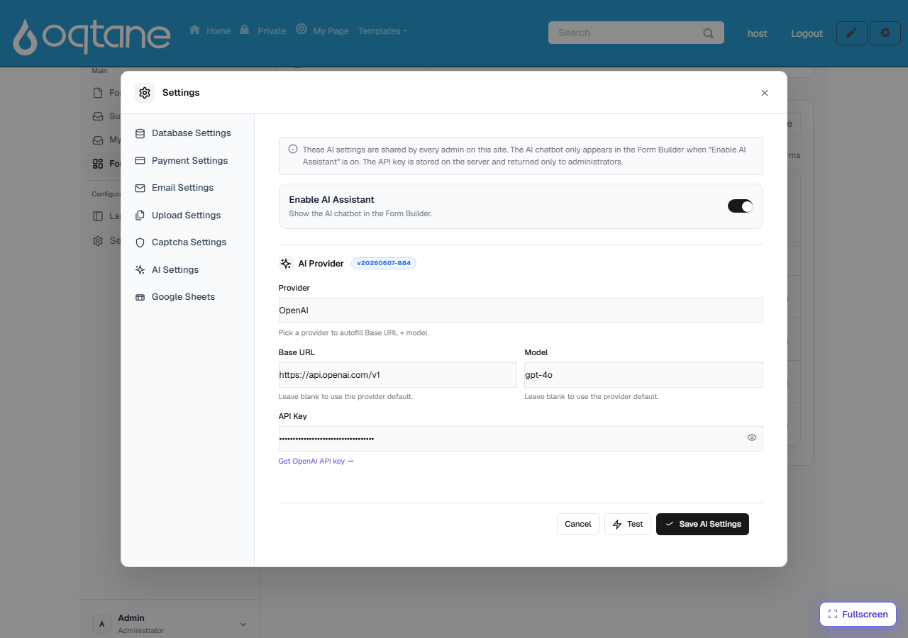

Configuring the AI Assistant
The AI Form Designer works with your own AI account. A site administrator sets it up once, and every admin on the site then shares the same configuration. Nothing is sent to MegaForm's servers — requests go straight from your site to the AI provider you choose.
Where the settings live
Open Form Dashboard → Settings → AI Settings:

The fields
| Field | What it does |
|---|---|
| Enable AI Assistant | Master switch. When on, the AI chatbot appears in the Form Builder and the Create with AI button appears on the dashboard. Turn it off to hide AI entirely. |
| Provider | Pick your AI provider — OpenAI, Anthropic (Claude), OpenRouter, Kimi (Moonshot), or any OpenAI-compatible endpoint. Choosing a provider auto-fills the Base URL and a default model. |
| Base URL | The provider's API endpoint (e.g. https://api.openai.com/v1). Leave blank to use the provider default. Point this at a local/self-hosted OpenAI-compatible server if you run your own. |
| Model | The model to use (e.g. gpt-4o). Leave blank to use the provider default. |
| API Key | Your provider API key. It is stored on the server and only ever returned to administrators. The field is masked; click the 👁 icon to reveal it while typing. |
Steps
- Toggle Enable AI Assistant on.
- Choose your Provider — the Base URL and Model fill in automatically. Adjust the model if you want a different one.
- Paste your API Key. Use the Get … API key → link under the field to create one on the provider's site if you don't have one yet.
- Click Test to verify the key, base URL, and model can reach the provider — you'll get an OK or a clear error.
- Click Save AI Settings.
That's it — open any form in the Form Builder and the AI bubble is ready, or use ✨ Create with AI on the dashboard.
Good to know
- Security. The API key never leaves your server except back to signed-in administrators; it is not exposed to page visitors or in the public form runtime.
- Shared per site. The provider, model, and key are shared by all admins on the site — one setup covers everyone.
- Cost. Requests are billed by your AI provider against your own account, so you stay in control of usage and spend.
- Trial installations show the assistant but keep it locked — a production license unlocks it.
Choosing a model
gpt-4o (OpenAI) and claude-* (Anthropic) both work well for form generation. Larger,
more capable models produce better multi-field forms, premium layouts, and SQL-aware designs;
smaller models are cheaper but may need more precise prompts. See
AI Prompts for Form Design for prompt patterns that get good
results on any model.